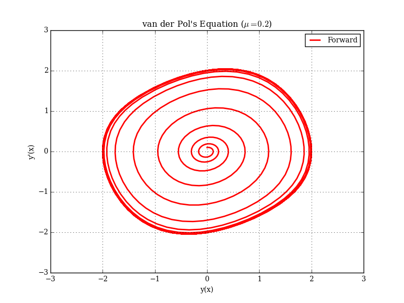
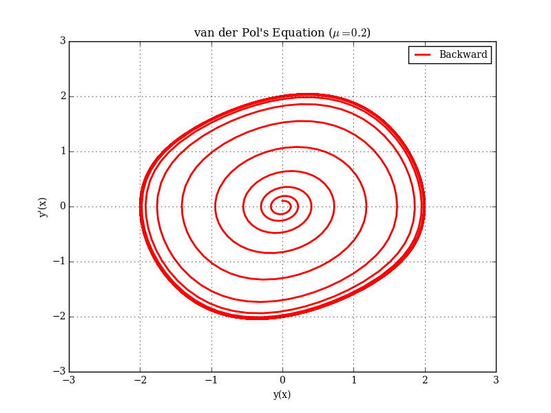

Driver for dop853 on van der Pol's equation.
 
This requires pyplot-fortran.
| Type | Attributes | Name | Initial | |||
|---|---|---|---|---|---|---|
| integer, | parameter | :: | n | = | 2 | dimension of the system |
| integer, | parameter, dimension(n) | :: | icomp | = | [1, 2] | indices of |
| integer, | parameter | :: | iout | = | 3 | output routine (and dense output) is used during integration |
| real(kind=wp), | parameter | :: | tol | = | 1.0e-12_wp | required (relative) tolerance |
| real(kind=wp), | parameter | :: | x0 | = | 0.0_wp | initial |
| real(kind=wp), | parameter | :: | xf | = | 100.0_wp | endpoint of integration |
| real(kind=wp), | parameter, dimension(n) | :: | y0 | = | [0.0_wp, 0.1_wp] | initial |
| real(kind=wp), | parameter | :: | dx | = | 0.01_wp | time step for dense output |
| logical, | parameter | :: | make_plots | = | .true. | use pyplot to generate plots. |
| type(dop853_class) | :: | prop | ||||
| real(kind=wp), | dimension(n) | :: | y | |||
| real(kind=wp), | dimension(1) | :: | rtol | |||
| real(kind=wp), | dimension(1) | :: | atol | |||
| real(kind=wp) | :: | x | ||||
| real(kind=wp) | :: | xend | ||||
| integer | :: | i | ||||
| integer | :: | idid | ||||
| integer | :: | j | ||||
| integer | :: | nfcn | ||||
| integer | :: | nstep | ||||
| integer | :: | naccpt | ||||
| integer | :: | nrejct | ||||
| logical | :: | status_ok | ||||
| type(pyplot) | :: | plt | ||||
| real(kind=wp), | dimension(:), allocatable | :: | t_vec | |||
| real(kind=wp), | dimension(:), allocatable | :: | y_vec | |||
| real(kind=wp), | dimension(:), allocatable | :: | yp_vec | |||
| integer | :: | istat | pyplot-fortran status flag |
Prints solution at equidistant output-points
by using contd8, the continuous collocation solution.
This is for an iout=3 case.
| Type | Intent | Optional | Attributes | Name | ||
|---|---|---|---|---|---|---|
| class(dop853_class), | intent(inout) | :: | me | |||
| integer, | intent(in) | :: | nr | |||
| real(kind=wp), | intent(in) | :: | xold | |||
| real(kind=wp), | intent(in) | :: | x | |||
| real(kind=wp), | intent(in), | dimension(:) | :: | y | ||
| integer, | intent(inout) | :: | irtrn | |||
| real(kind=wp), | intent(out) | :: | xout | the point where we want the next output reported |
Prints a normal step from dop853 (for iout=1).
| Type | Intent | Optional | Attributes | Name | ||
|---|---|---|---|---|---|---|
| class(dop853_class), | intent(inout) | :: | me | |||
| integer, | intent(in) | :: | nr | |||
| real(kind=wp), | intent(in) | :: | xold | |||
| real(kind=wp), | intent(in) | :: | x | |||
| real(kind=wp), | intent(in), | dimension(:) | :: | y | ||
| integer, | intent(inout) | :: | irtrn | |||
| real(kind=wp), | intent(out) | :: | xout | not used for |
Right-hand side of van der Pol's equation: \( y'' = \mu(1-y^2)y' - y \).
| Type | Intent | Optional | Attributes | Name | ||
|---|---|---|---|---|---|---|
| class(dop853_class), | intent(inout) | :: | me | |||
| real(kind=wp), | intent(in) | :: | x | |||
| real(kind=wp), | intent(in), | dimension(:) | :: | y | \( [y, y' ] \) |
|
| real(kind=wp), | intent(out), | dimension(:) | :: | f | \( [y', y'' ] \) |
program dop853_test
use dop853_module
use dop853_constants
use iso_fortran_env, only: output_unit
use pyplot_module
implicit none
integer,parameter :: n = 2 !! dimension of the system
integer,dimension(n),parameter :: icomp = [1,2] !! indices of `y` where we need dense output
integer,parameter :: iout = 3 !! output routine (and dense output) is used during integration
real(wp),parameter :: tol = 1.0e-12_wp !! required (relative) tolerance
real(wp),parameter :: x0 = 0.0_wp !! initial `x` value
real(wp),parameter :: xf = 100.0_wp !! endpoint of integration
real(wp),dimension(n),parameter :: y0 = [0.0_wp,0.1_wp] !! initial `y` value
real(wp),parameter :: dx = 0.01_wp !! time step for dense output
logical,parameter :: make_plots = .true. !! use pyplot to generate plots.
type(dop853_class) :: prop
real(wp),dimension(n) :: y
real(wp),dimension(1) :: rtol,atol
real(wp) :: x,xend
integer :: i,idid,j,nfcn,nstep,naccpt,nrejct
logical :: status_ok
type(pyplot) :: plt
real(wp),dimension(:),allocatable :: t_vec, y_vec, yp_vec
integer :: istat !! pyplot-fortran status flag
x = x0
y = y0
xend = xf
rtol = tol
atol = tol
call prop%initialize( fcn = fvpol, &
n = n, &
solout = solout, &
icomp = icomp, &
nstiff = 1, &
status_ok = status_ok )
!all other parameters use defaults
if (status_ok) then
call prop%integrate(x,y,xend,rtol,atol,iout,idid)
call prop%info(nfcn,nstep,naccpt,nrejct)
if (make_plots) then
t_vec = [t_vec,x] !last point
y_vec = [y_vec,y(1)]
yp_vec = [yp_vec,y(2)]
end if
! print final solution
write (output_unit,'(1X,A,F6.2,A,2E18.10)') &
'x =',x ,' y =',y(1),y(2)
! print statistics
write (output_unit,'(A,D8.2)') ' tol=',tol
write (output_unit,'(A,I5,A,I4,A,I4,A,I3)') &
' fcn=',nfcn,' step=',nstep,' accpt=',naccpt,' rejct=',nrejct
! plot:
if (make_plots) then
call plt%initialize(grid=.true.,xlabel='y(x)',&
ylabel='y''(x)',&
title='van der Pol''s Equation ($\mu = 0.2$)',legend=.true.)
call plt%add_plot(y_vec,yp_vec,label='Forward',&
linestyle='r-',linewidth=2,&
xlim=[-3.0_wp,3.0_wp], ylim=[-3.0_wp,3.0_wp],istat=istat)
call plt%savefig('dop853_forward.png',istat=istat)
call plt%destroy()
deallocate(t_vec )
deallocate(y_vec )
deallocate(yp_vec)
end if
!--------------------------------------------------
write(*,*) ''
write(*,*) 'backwards test'
write(*,*) ''
call prop%destroy()
call prop%initialize(fcn=fvpol,n=n,solout=solout2,status_ok = status_ok)
call prop%integrate(x,y,x0,rtol,atol,iout=1,idid=idid)
write(*,*) ''
write(*,*) 'error:', norm2(y-y0)
write(*,*) ''
! plot:
if (make_plots) then
call plt%initialize(grid=.true.,xlabel='y(x)',&
ylabel='y''(x)',&
title='van der Pol''s Equation ($\mu = 0.2$)',legend=.true.)
call plt%add_plot(y_vec,yp_vec,label='Backward',&
linestyle='r-',linewidth=2,&
xlim=[-3.0_wp,3.0_wp], ylim=[-3.0_wp,3.0_wp],istat=istat)
call plt%savefig('dop853_backward.png',istat=istat)
call plt%destroy()
end if
else
write(output_unit,'(A)') 'error calling INITIALIZE.'
end if
contains
!*****************************************************************************************
!*******************************************************************************
!>
! Prints solution at equidistant output-points
! by using [[contd8]], the continuous collocation solution.
! This is for an `iout=3` case.
!
!@note This routine uses Fortran 2008 LHS automatic allocations.
subroutine solout(me,nr,xold,x,y,irtrn,xout)
implicit none
class(dop853_class),intent(inout) :: me
integer,intent(in) :: nr
real(wp),intent(in) :: xold
real(wp),intent(in) :: x
real(wp),dimension(:),intent(in) :: y
integer,intent(inout) :: irtrn
real(wp),intent(out) :: xout !! the point where we want the next output reported
if ( nr==1 ) then
write (output_unit,'(1X,A,F6.2,A,2E18.10,A,I4)') &
'x =',x,&
' y =',y(1),y(2),&
' nstep =',nr - 1
xout = dx
else
do
if ( x<xout ) exit
write (output_unit,'(1X,A,F6.2,A,2E18.10,A,I4)') &
'x =',xout,&
' y =',&
prop%contd8(1,xout),&
prop%contd8(2,xout),&
' nstep =',nr - 1
xout = xout + dx
end do
end if
if (make_plots) then
if (allocated(t_vec)) then !fortran 2008 lhs allocations
t_vec = [t_vec,x]
y_vec = [y_vec,y(1)]
yp_vec = [yp_vec,y(2)]
else
t_vec = [x]
y_vec = [y(1)]
yp_vec = [y(2)]
end if
end if
end subroutine solout
!*******************************************************************************
!*******************************************************************************
!>
! Prints a normal step from [[dop853]] (for `iout=1`).
!
!@note This routine uses Fortran 2008 LHS automatic allocations.
subroutine solout2(me,nr,xold,x,y,irtrn,xout)
implicit none
class(dop853_class),intent(inout) :: me
integer,intent(in) :: nr
real(wp),intent(in) :: xold
real(wp),intent(in) :: x
real(wp),dimension(:),intent(in) :: y
integer,intent(inout) :: irtrn
real(wp),intent(out) :: xout !! not used for `iout=1`.
write (output_unit,'(1X,A,F6.2,A,2E18.10,A,I4)') &
'x =',x,&
' y =',y(1),y(2),&
' nstep =',nr - 1
if (make_plots) then
if (allocated(t_vec)) then
t_vec = [t_vec,x]
y_vec = [y_vec,y(1)]
yp_vec = [yp_vec,y(2)]
else
t_vec = [x]
y_vec = [y(1)]
yp_vec = [y(2)]
end if
end if
end subroutine solout2
!*******************************************************************************
!*******************************************************************************
!>
! Right-hand side of van der Pol's equation:
! \( y'' = \mu(1-y^2)y' - y \).
!
!### Reference
! * Weisstein, Eric W. "[van der Pol Equation](http://mathworld.wolfram.com/vanderPolEquation.html)."
! From MathWorld--A Wolfram Web Resource.
!
!@note The [original code](http://www.unige.ch/~hairer/prog/nonstiff/dr_dop853.f)
! had a slightly different equation.
subroutine fvpol(me,x,y,f)
implicit none
class(dop853_class),intent(inout) :: me
real(wp),intent(in) :: x
real(wp),dimension(:),intent(in) :: y !! \( [y, y' ] \)
real(wp),dimension(:),intent(out) :: f !! \( [y', y'' ] \)
real(wp),parameter :: mu = 0.2_wp !! \( \mu \) in van der Pol's equation.
f(1) = y(2)
f(2) = mu*(1.0_wp-y(1)**2)*y(2) - y(1)
end subroutine fvpol
!*******************************************************************************
end program dop853_test